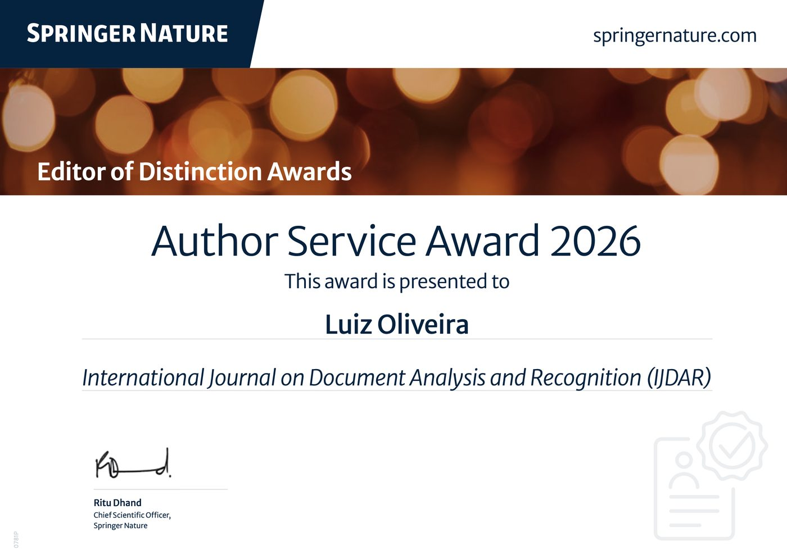

An Unexpected Recognition
Editor of Distinction Award
Recently, I received the Author Service Award 2026 from the International Journal on Document Analysis and Recognition (IJDAR), published by Springer Nature. I was quite surprised, especially because one of the biggest challenges in academic publishing today is finding reviewers willing to carefully evaluate papers. Very often, it takes more than 15 invitations to secure two reviewers. Then, when the reviews finally arrive, some of them are disappointingly poor. Over the years, I have accepted review invitations because I believe peer review is essential for maintaining scientific quality and helping authors improve their work. However, I truly believe this system is broken. It is long past time to do something about it. Anyway, I am grateful to the editors of IJDAR and Springer Nature for this recognition.
